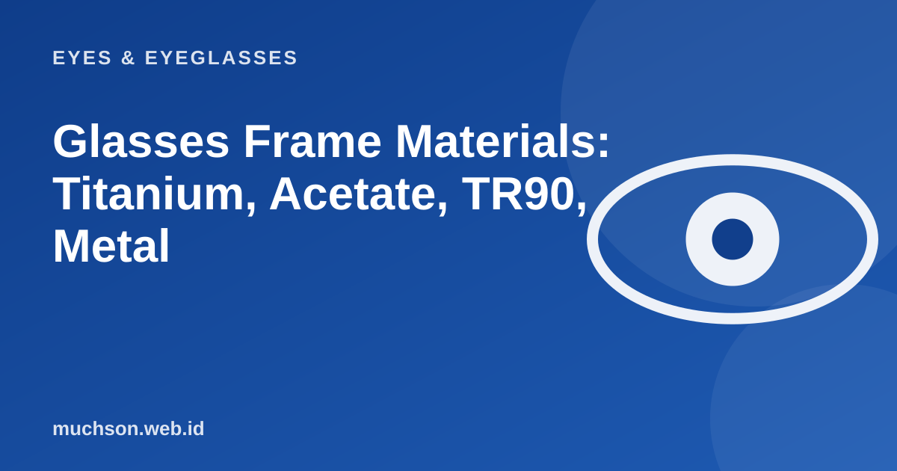

Home › Articles › Eyes & Eyeglasses
Eyes & EyeglassesGlasses Frame Materials: Titanium, Acetate, TR90, Metal
Two frames with the same shape can feel very different because of their material: one barely registers on your nose, the other leaves a mark by the end of the day. Understanding materials helps you pay for what is actually useful.

Comparing the materials
| Material | Pros | Cons | Best for |
|---|---|---|---|
| Titanium | Very light, strong, corrosion-proof, hypoallergenic | High price, hard to repair if it breaks | All-day use, sensitive skin |
| Acetate | Rich colours and patterns, solid, comfortable | Heavier, can dull if not cared for | Fashion looks, thick frames |
| TR90 (flexible nylon) | Light, flexible, impact-resistant | A more limited choice of models | Children, sport |
| Stainless steel | Strong, thin, mid-range price | Heavier than titanium, can trigger a nickel allergy | General use |
| Ordinary alloy | Cheap, many models | The paint can peel and it can cause allergies | A limited budget |
Text description of the diagram
- Titanium: 12 g
- TR90: 14 g
- Stainless steel: 20 g
- Acetate: 28 g
Choose to suit your needs
Material allergy
If the skin around your nose and ears turns red or itchy after wearing glasses, the frame material may be the cause. Try a hypoallergenic material such as titanium or medical-grade plastic.
FAQ
Is titanium always better?
It wins on weight and corrosion resistance, but is not always the best fit. For children or rough use, a flexible material like TR90 is often more practical.
What is the difference between acetate and ordinary plastic?
Acetate is a cellulose-based plastic that is polished and more solid, with richer colours than cheap moulded plastic.
Can a broken frame be repaired?
It depends on the material and where it broke. Titanium is hard to weld, acetate can sometimes be glued or have the hinge replaced, and ordinary metal can be soldered. Ask your optical shop.